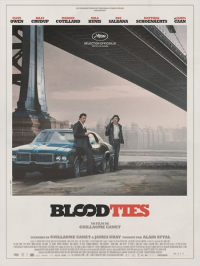

14 BLOOD TIES
- Critique
- Film policier

New York, dans les années 70. Alors que son frère Frank est policier, Chris sort de prison après avoir passé de nombreuses années derrière les barreaux pour meurtre. Mais leurs retrouvailles sont loin d’être évidentes même si Frank l’aide beaucoup pour qu’il se refasse…
Guillaume Canet signe un film plein de style mais justement peut-être un peu trop car l’ensemble est presque trop lisse et parfois un peu désincarné. Néanmoins, on peut estimer qu’il a réussi son examen de rentrée à Hollywood.
- Timothée
- 05.11.2013, 21:49